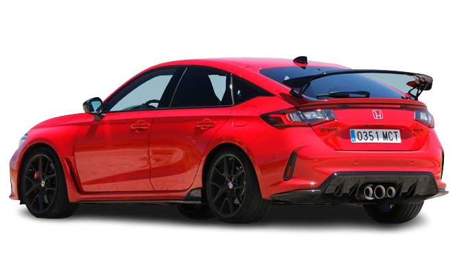

Por ser um esportivo com foco competitivo, ele possui câmbio manual de seis velocidades que, junto do restante do veículo, consegue levar o Type R a acelerar de 0 km/h a 100 km/h em 5,4 segundos, além de atingir uma máxima de 275 km/h.15 de jan. de 2024
Modelo: Honda Civic Motor: 2,0 l 4 cilindros em linha Potência: 297 HP Dimensões: 4.598 mm C x 1.890 mm L x 1.407 mm A Preço sugerido: A partir de R$ 429.900 Transmissão: Manual de 6 marchas Configuração dos cilindros: Motor em linha
Quanto custa o novo Type R? Atualmente, o Civic Type R 2024 é oferecido em versão única, mas com adicionais que garantem ainda mais personalidade ao carro. Honda Civic Type R (sem pacote Traffic Alert): R$ 429.900; Honda Civic Type R (com pacote Traffic Alert): R$ 434.900.30 de out. de 2023
